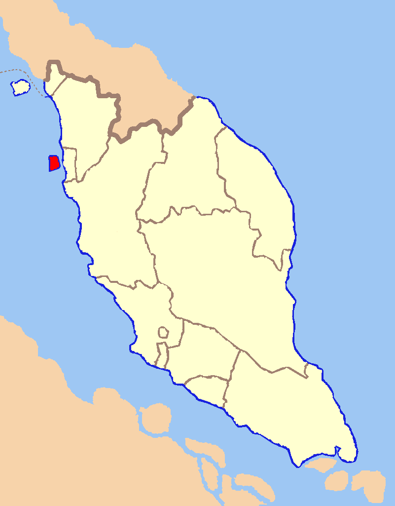
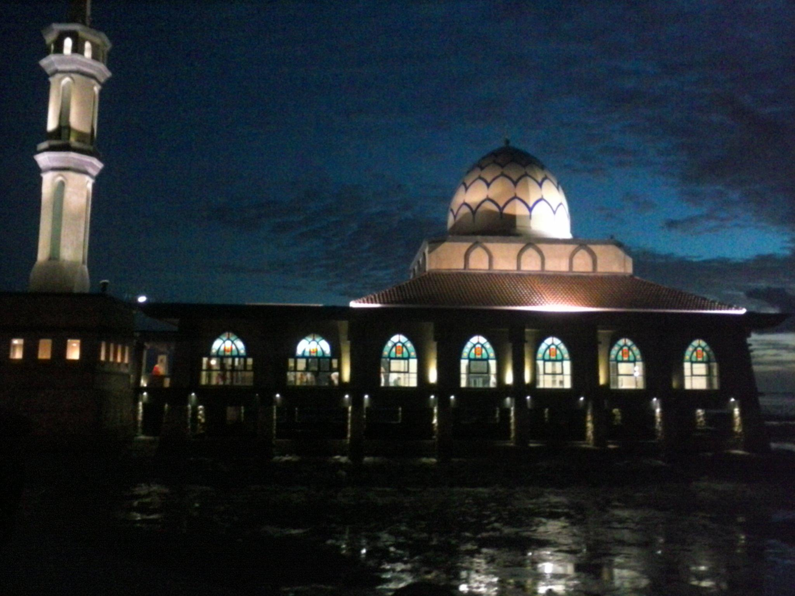
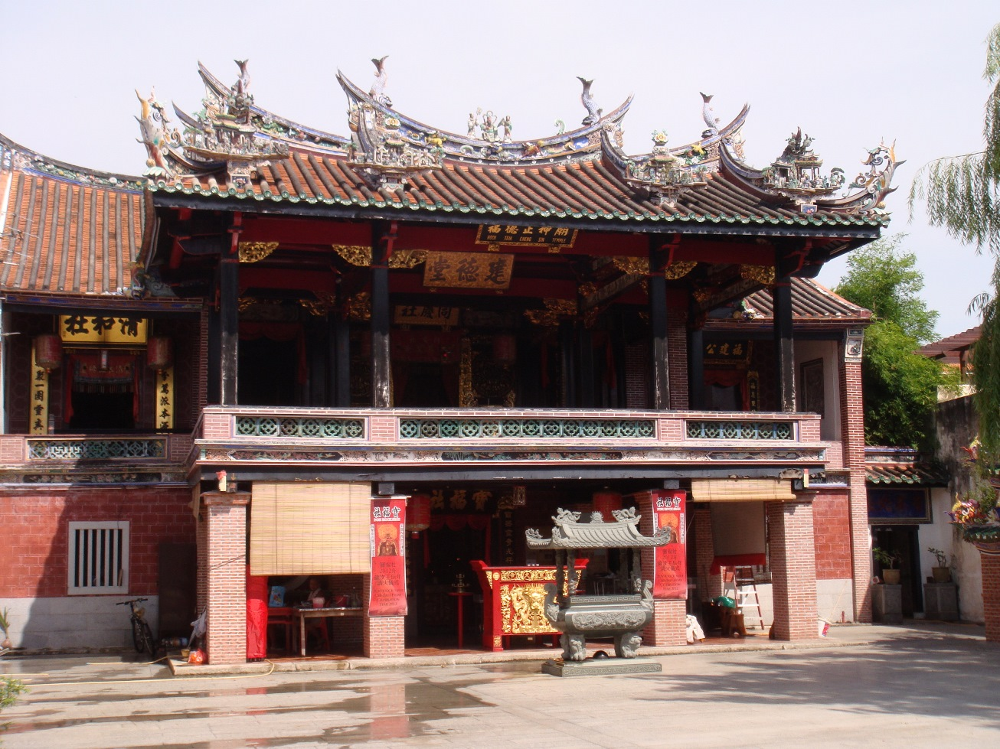
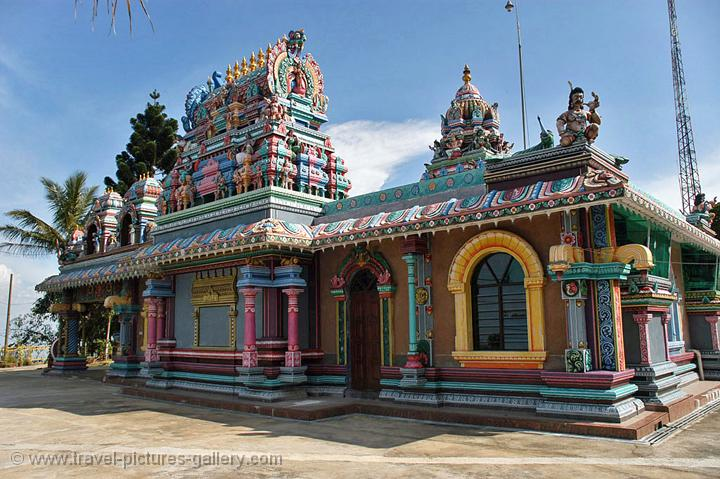
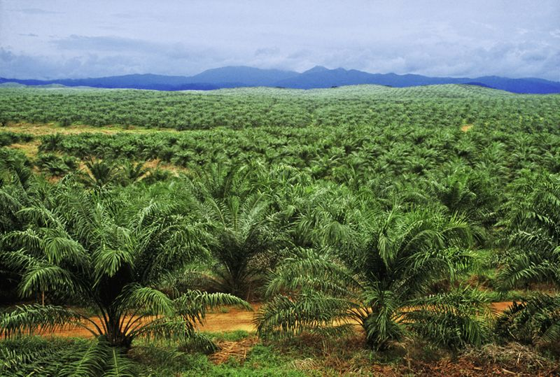
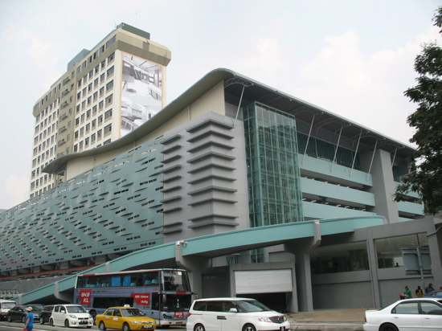

La Malesia è una delle nazioni del Sud-est asiatico cosiddette “Tigri Asiatiche”, la cui economia cresce notevolmente anno dopo anno; ovviamente deve la sua recente crescita economica alle sue enormi ricchezze. Lo Stato Malese è nato ufficialmente nel 1963, dopo essersi liberato del controllo dell’Inghilterra.
Sono presenti molte etnie e culture nel paese, e il motivo principale è che la Malesia venne colonizzata da molti popoli stranieri:
I portoghesi nel 1511 conquistarono Malacca, che cadde nel 1641 nelle mani degli olandesi.
Gli inglesi nel 1786 ottennero l'isola del Penang, e nel 1824 conquistarono l'isola di Singapore, punto perfetto per il commercio
Nello stesso anno, grazie a un trattato gli Inglesi ottennero il controllo di Malacca dagli olandesi in cambio della colonia di Bencoolen, cioè dell’isola di Sumatra. In tal modo gli inglesi divennero l’unica potenza coloniale in Malesia, mentre gli olandesi soggiogarono l’attuale Indonesia;
Nel periodo di occupazione inglese avvenne una grande migrazione dalla Cina, il cui flusso di immigranti non si sarebbe mai arrestato fino alla crisi del 1929; i cinesi arrivavano poveri ma molto industriosi, e in pochi decenni arrivarono a controllare vari settori dell'economia, incluse le miniere del Perak, il principale esportatore di stagno. Questo portò a numerosi scontri di carattere etnico con il resto degli abitanti.
Per controllare la situazione gli inglesi inserirono dei consiglieri, Residents in inglese, negli Stati Malesi, che di fatto perdevano tutta la loro dipendenza.
Nel 1900 gli stati di Pahang, Selangor e Negeri Sembilan, oltre al Perak avevano consiglieri inglesi; essi furono uniti nei Federated Malay States. Nel 1909 anche gli Stati del nord (Kedah, Kelantan, Perlis e Terengganu) furono costretti a fare lo stesso di quelli del Sud, e vennero chiamati Unfederated Malay States. Nel 1914 anche il Johor, lo stato più forte, accettò un consigliere inglese e si unì ai Federated Malay States.
Nel Borneo invece l'avventuriero James Brooke instituì nel 1841 una specie di sultanato detto "bianco" nella parte nord-ovest dell'isola, la zona dell'odierno Sarawak. La parte nord fu controllata direttamente dalla Compagnia Delle Indie a partire dal 1881; anche il Brunei divenne protettorato inglese.
Inglesi e olandesi si spartirono l'isola del Borneo con un secondo trattato anglo-olandese nel 1891, dividendo le due zone che ora sono della Malesia e della Indonesia.
Dopo la conquista dell’Indocina da parte dei giapponesi nel 1941, e il conseguente un blocco delle esportazioni degli Stati Uniti verso il Giappone, la nazione nipponica, siccome era povera di risorse, decise di conquistare nuovi territori per ottenerle. Dopo mesi di preparativi i giapponesi sferrarono contemporaneamente l'attacco a Pearl Harbor e l'invasione della Malesia (7-8 dicembre 1941).
Iniziò un periodo di intenso sfruttamento da parte dei giapponesi: proponendosi infatti come i liberatori dei Malesi dal colonialismo, discriminavano i cinesi e ne trucidarono più o meno 80.000 nella cosiddetta sook ching.
Ma questa politica non produsse grandi risultati in campo economico perché il crollo delle esportazioni di materie prime aumentò la disoccupazione.
Si svilupparono perciò, per la prima volta, dei movimenti nazionalisti, e prese forma l’idea di unificare i sultanati in un’unica nazione; quest'idea fu largamente appoggiata dagli inglesi quando dopo la fine della guerra tornarono a governare la colonia.
Pochi anni dopo, tuttavia, Singapore fu costretta a lasciare la federazione, in base alle profonde differenze etniche e ideologiche: la maggioranza della popolazione era cinese, e il partito principale era quello comunista.
Nel suo libro The Rice Mother l'autrice Rani Manicka tratta di una famiglia indiana molto povera, il cui padre viene catturato e torturato dai giapponesi; le loro torture sono particolarmente brutali (bere acqua molto salata, interrogatori e mutilazioni fisiche).
La Malesia è oggi un regno federale costituzionale: il re è eletto ogni 5 anni tra i sultani (i governatori degli stati) che ricalcano ancora i vecchi Stati Malesi; la figura del re è certamente derivata dalla dominazione inglese, anche se c’è una notevole differenza: il re non è per niente famoso, oltre ad avere scarso peso politico. Il potere decisionale è nelle mani del governo, le cui elezioni si svolgono ogni cinque anni; le ultime sono state nel maggio 2013.
In realtà neanche gli stati/regioni hanno una grande indipendenza dal governo federale, se non quella nominale; possono decidere dell’orario scolastico e di alcuni giorni di festa (l’unica differenza che ho notato tra i vari stati: in quelli del nord, più tradizionalisti, la scuola inizia la domenica e finisce il giovedì; inoltre non sono riconosciute alcune feste pagane come il capodanno).
La Malesia è quindi una nazione multiculturale, in cui vivono circa 28 milioni di persone, principalmente sulla penisola: solo 6 milioni vivono nel Borneo. In generale la popolazione è composta dal 60% di Malesi (di etnia), dal 22,9% di cinesi e dal 7,1% di indiani; la restante percentuale comprende gruppi etnici già preesistenti (tra cui gli Orang Asli, piccole comunità che vivono quasi nello stesso modo dell’antichità, praticamente isolati dal resto del mondo) e altre minoranze etniche.
L’etnia autoctona, esistente cioè prima del periodo coloniale, è chiamata Bumiputera, ma la sua definizione da parte della Costituzione è ambigua: infatti i Malesi (Malay) sono definiti come musulmani che praticano le usanze tipiche Malesi, e sono inclusi nei Bumiputra; godono di alcuni vantaggi rispetto al resto della popolazione, principalmente sussidi economici per la famiglia e per gli studenti; ciò è avvenuto con la decisione del governo di creare una nuova politica economica per favorire i Malay, che, nonostante siano la maggioranza della popolazione, possiedono poco potere economico (che è rimasto principalmente nelle mani dei cinesi).
Le tre principali etnie si differenziano, oltre ai tratti somatici, anche per la religione: i Malay sono musulmani, i cinesi sono principalmente buddisti (anche cristiani: il cristianesimo si è diffuso largamente in Malesia), gli indiani sono induisti. Ma ci sono anche indiani musulmani, e anche cinesi musulmani.
La risorsa più importante scoperta in Malesia dopo l’occupazione inglese è sicuramente il petrolio, i cui giacimenti si trovano principalmente nel Mar Cinese del Sud. Lo sfruttamento di questa risorsa ha permesso l’incredibile sviluppo economico degli ultimi decenni. Le riserve di petrolio sono immense, e la Malesia ne fa un uso spropositato.
Queste enormi risorse hanno trainato l’economia malese negli ultimi cinquant’anni (il 2013 era anche il cinquantenario della fondazione della Malesia) rendendolo uno degli stati più ricchi del Sud-est asiatico
La Malesia oggi vive in un clima di benessere, creatosi grazie all’imponente sviluppo economico: oltre al petrolio, è importantissima la coltura della palma, che si estende per milioni di kmq e il cui olio è considerato uno dei migliori al mondo: si usa nell’industria per produrre cibo. Oltre alla palma ci sono vaste regioni in cui crescono alberi della gomma, di cui la Malesia è uno dei principali esportatori.
Nella Malesia si possono notare piccoli ma significanti dettagli che esprimono quel modello di sviluppo tipico degli stati di nuova industrializzazione: i grandi piani regolatori hanno creato città ordinate, con pochi problemi al traffico (che anche nella capitale è molto scorrevole); le costruzioni non sono ammassate l'una accanto all'altra e si tende a lasciare degli spazi liberi tra di esse. La foto alla destra è stata scattata nella capitale Kuala Lumpur.
Sul piano dei trasporti, la rete ferroviaria è largamente inutilizzata e sottosviluppata, e mentre in Europa esistono grandi stazioni dei treni, in Malesia esistono enormi stazioni dei bus, con interi piani dedicati alle biglietterie, perché esistono moltissime piccole compagnie. Un altro esempio può essere il fatto che sul carburante esistono delle sovvenzioni statali sulla benzina, e che praticamente non circolano motori a Diesel nelle città. L’energia elettrica è ottenuta dalle centrali termiche, e in tutta la mia permanenza nel Paese non ho mai sentito parlare della costruzione di centrali nucleari o solari.
Anche il turismo è una risorsa che attira sempre più persone: le mete più belle sono, oltre alle città coloniali come Malacca e il Penang, le isole paradisiache del Mar Cinese del Sud, come Pulau (=isola) Tioman, Pulau Redang e Pulau Perhentian che si trovano nella penisola.
L’uso indiscriminato del petrolio ha indubbiamente nociuto all’ambiente, alla flora e alla fauna; il bisogno di terreni coltivabili ha fatto sparire una buona parte della foresta pluviale, e il turismo delle isole, servendosi di moltissime imbarcazioni a motore, ha finito per danneggiare i bellissimi coralli, che muoiono per l’inquinamento dell’acqua del mare. Molte persone si sono già accorte di questo problemi, e combattono per limitare la deforestazione e lo sfruttamento senza limiti di tutte le risorse disponibili.
Fonti:
Use a spacebar or arrow keys to navigate